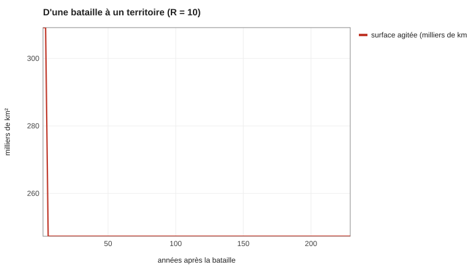
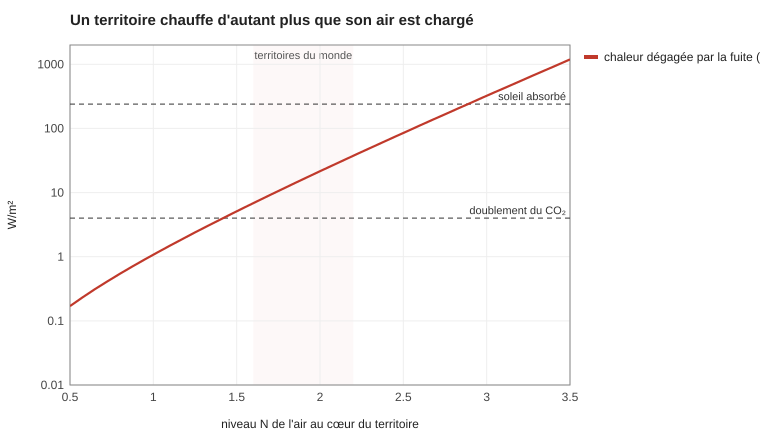
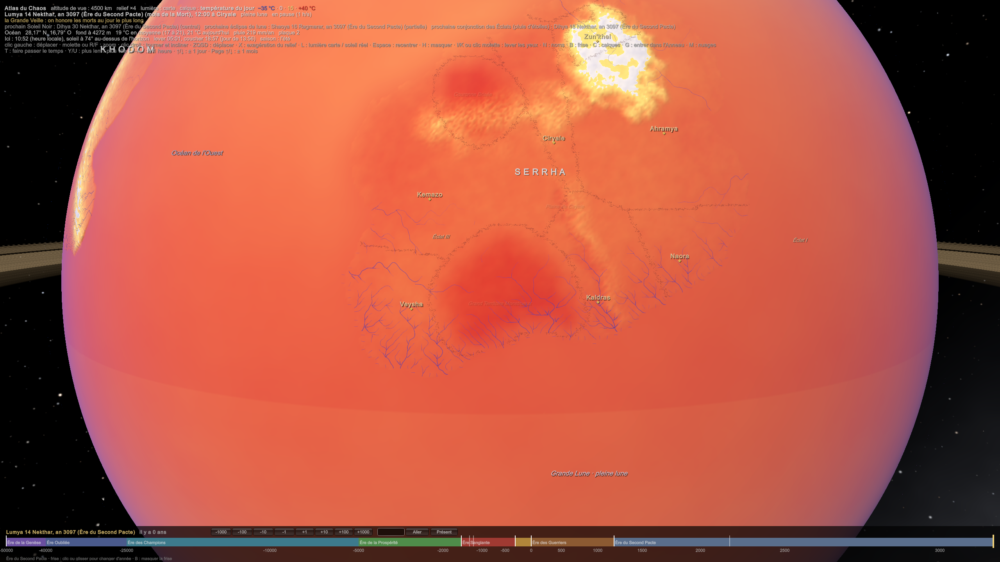

SIM-19 — Le champ du Chaos, chiffré
Code : sim19_champ.py (Python pur, python -I sim19_champ.py). Les lois qui en sortent : PHY-005 Le champ du Chaos.
Question. Plusieurs fiches parlent du Chaos avec des mots (« il diffuse », « il nourrit les monstres », « la Racine porte Maakar »). Combien, exactement ? On ne part que des deux lois canon :
- E = Q × ε × ΔN ;
- ε = 1 kJ, N = 0 = 1 chaon par m³.
1. La loi de la pente
Le potentiel d'un chaon vaut μ = ε·N = ε·log₁₀(C). C'est exactement la loi d'un gaz parfait, μ = kT·ln C, avec une « température » kT_χ = ε / ln 10 ≈ 434 J.
Pour un gaz parfait ou une solution diluée, l'énergie libre d'une particule vaut kT·ln(C) + constante. C'est ce qui fait diffuser les parfums et marcher les piles (équation de Nernst). La loi de Fick (le flux va du concentré vers le dilué) en découle.
Conséquence : la loi canon n'est pas arbitraire. Elle dit que le Chaos libre se comporte comme un gaz de chaons, chacun 10²³ fois plus « chaud » qu'une molécule d'air. La force sur un chaon libre vaut ε × la pente de N :
| Pente | Force par chaon |
|---|---|
| 1 niveau par mètre (le bord d'un sort) | 1 000 N |
| 1 niveau par km | 1 N |
| 5 niveaux sur 200 km (le bord d'un territoire) | 0,025 N |
2. Le transport : l'air porte le Chaos, le vivant le retient
Le Chaos libre est emporté par l'air, comme une fumée, et retenu par le sol, l'eau et le vivant, comme un polluant dans la terre.
Dans l'atmosphère, un nuage de fumée s'étale d'autant plus vite qu'il est grand : la diffusivité croît comme la taille à la puissance 4/3 (≈ 0,004 m²/s à 5 m, ≈ 2 500 m²/s à 100 km). Les tourbillons de toutes tailles se relaient.
| Échelle | Diffusivité | Temps de mélange |
|---|---|---|
| Une salle (5 m) | 0,004 m²/s | ≈ 2 heures |
| Un village (100 m) | 0,2 m²/s | ≈ 13 heures |
| Une case de l'Atlas (111 km) | 2 500 m²/s | ≈ 2 mois |
- Une salle vidée par des mages se recharge en une à deux heures, en quelques minutes si on ouvre les fenêtres. Ça confirme PHY-004 Échelle d'énergie : un groupe de mages vide vraiment l'air d'une salle, et une académie a intérêt à être bien aérée.
- Le retard. Le sol et le vivant retiennent le Chaos (§3). Dans une plaine ordinaire, ≈ 20 % du Chaos libre d'une colonne est retenu (R ≈ 1,2) ; dans une forêt de Chaos, ≈ 90 % (R ≈ 10).
Le temps des territoires. Avec R = 10, un pas du modèle de Gray–Scott (SIM-05, Atlas) vaut ≈ 23 jours. Les 4 000 pas de l'Atlas font ≈ 300 ans.

| Après la bataille | Ce qui se passe |
|---|---|
| quelques mois | la terre de la bataille est déjà un territoire |
| ≈ 10 ans | il essaime : un second territoire se détache et part s'installer ailleurs |
| ≈ 300 ans | le motif est stable, comme celui de la carte |
C'est assez lent pour qu'un royaume le voie venir, assez rapide pour qu'un personnage voie naître un territoire dans sa vie.
3. Le partage : le vivant concentre le Chaos
À l'équilibre, chaque matière contient un multiple fixe du Chaos de l'air qui la touche, comme l'eau dissout un gaz (loi de Henry) ou comme la graisse concentre les pesticides.
| Matière | Coefficient | Niveau à l'équilibre |
|---|---|---|
| Air | 1 | N |
| Roche sèche | 10 | N + 1 |
| Eau | 30 | N + 1,5 |
| Sol vivant, humus | 300 | N + 2,5 |
| Chair, bois vivant | 1 000 | N + 3 |
| Fer, nickel | 0 | il avale le Chaos et le change en chaleur |
C'est l'ordre déjà posé par CHI-002 Le Chaos dans la matière (vivant > eau > roche > métal > fer), mais chiffré.
Un corps humain (≈ 0,05 m³ ) dans l'air ordinaire contient **≈ 70 chaons dissous. PHY-004 proposait, sans calcul, ≈ 100 unités pour une âme ordinaire. Le Chaos d'un homme ordinaire est simplement celui que sa chair retient. La C-05 (« la vie dépend du Chaos ») devient une loi de partage : la vie est ce qui concentre le Chaos.
4. Un territoire est un îlot de chaleur
Le Chaos s'échappe par les bords d'un territoire et « tombe » dans l'air ordinaire. Ce qui tombe sans être orienté devient chaleur (PHY-003 Thermodynamique du Chaos).

| Air au cœur | Chaleur moyenne | Réchauffement |
|---|---|---|
| N = +1 | 1 W/m² | ≈ 0,4 °C |
| N = +2 | ≈ 22 W/m² | ≈ 9 °C |
| N = +2,5 | 85 W/m² | ≈ 34 °C |
| N = +3 | 320 W/m² (plus que le soleil) | un four |
Le plafond. La fuite croît comme 10^N : au-delà de N ≈ +2,5 dans l'air libre, un territoire rayonnerait plus que le soleil. Comme le niveau ne monte que comme le logarithme de la source, il faut une source 10 fois plus forte pour gagner un niveau. Les territoires du monde sont donc tous vers N ≈ +2 dans l'air, +4,5 dans leur sol, +5 dans la chair de leurs monstres. Les niveaux +6 à +9 n'existent que dans de petits objets fermés : des cristaux, des âmes, des dieux.
Le tableau des seuils « +4 à +5 : naissance de monstres » vaut pour la matière vivante, pas pour l'air. L'air d'un territoire est à +2.
Ce que ça donne dans le monde (calculé dans l'Atlas) :
- les territoires sont plus chauds de 5 à 9 °C en leur cœur : pas de neige l'hiver, de la brume qui fume aux lisières, des orages de chaleur (: « météo anormale ») ;
- un territoire de montagne garde des cols praticables quand tout gèle autour.

Le calque « température du jour » : le Grand Territoire (au sud) et la Couronne Brisée (au nord) en taches rouges.
5. Les monstres nés : la chaosynthèse
Un mammifère sauvage dépense par jour ≈ 4,82 × M^0,734 kJ (M en grammes) : ≈ 200 W pour 70 kg, ≈ 580 W pour 300 kg.
Au cœur d'un territoire, ≈ 4 000 kg/km² de monstres nés demandent ≈ 8 kW/km². S'ils en tirent la moitié du Chaos, ils ne captent que ≈ 0,02 % de la chaleur qui fuit. La « chaosynthèse » est ≈ 50 fois moins efficace que la photosynthèse, mais elle tourne jour et nuit, et l'énergie disponible est surabondante : ce qui limite les monstres, c'est leur rendement, pas le Chaos.
Un monstre comme réserve. Un monstre de 500 kg du cœur d'un territoire (chair à N = +5) contient ≈ 50 000 chaons : relâchés dans l'air ordinaire, ≈ 250 MJ, soit 60 kg de TNT, mais seulement ≈ 7 litres d'huile. Un monstre n'est pas un réservoir de pétrole, c'est une pile à haute tension : peu de quantité, beaucoup de « chute ». Sa valeur est celle d'un concentré pour les sorts, pas d'un combustible (PLA-003 Ressources à nuancer).
6. La fuite de la Mère
Pour tenir tous les territoires du monde (16 % des terres), la Mère doit fournir ≈ 100 TW à travers le sceau :
- ≈ 0,1 % de la lumière du soleil reçue ;
- ≈ 2 fois la chaleur interne de la Terre ;
- ≈ 5 × 10¹⁰ chaons par seconde.
Le point de bascule de SIM-05 (+14 % de fuite) ne représente que ≈ 15 TW de plus. Le sceau protège le monde à quelques pour cent près.
7. Maakar
La Racine porte les derniers pour cent du poids de Maakar (SIM-16 Maakar flottant). Avec la loi de la pente, la quantité de Chaos de la roche fixe l'écart de niveau que la Racine doit maintenir :
| Roche de Maakar | Écart que la Racine doit maintenir |
|---|---|
| N = +3 | 130 niveaux (impossible) |
| N = +4 | 13 niveaux |
| N = +5 | 1,3 niveau |
La roche de Maakar est donc à N ≈ +5, saturée comme la chair d'un monstre. C'est cohérent avec ses 88 % de glace tombée de l'Anneau, qui retient bien le Chaos.
Limites
- Les coefficients de partage sont choisis pour respecter l'ordre de CHI-002 et retrouver les ≈ 100 unités de PHY-004.
- La chaleur suppose une couche de mélange de 1 km et une sensibilité locale de 0,4 °C par W/m².
- Le rendement de chaosynthèse et la part du Chaos dans l'alimentation des monstres (50 %) sont des propositions.
Sources
- Richardson (L. F.), Atmospheric diffusion shown on a distance-neighbour graph, Proc. R. Soc. A, 1926 ; Okubo (A.), Oceanic diffusion diagrams, 1971.
- Nagy (K. A.), Girard et Brown, Energetics of free-ranging mammals, reptiles, and birds, Annu. Rev. Nutr., 1999.
- Gray et Scott, 1984 ; Pearson, Science, 1993 (modèle de SIM-05).